- Home
- Browse
Adventure Stories
Read the stories we love
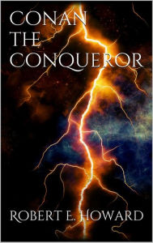 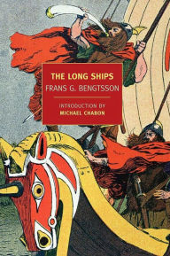 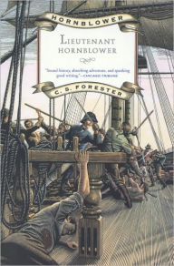 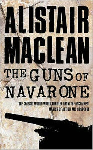 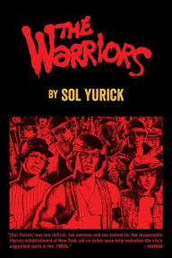 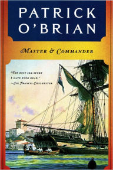 Ivanhoe
Ivanhoe
by Walter Scott
Ratings
It all starts here. One of the first true examples of a “historical novel” in Western literature, Ivanhoe is set in the 12th century and focuses on one of the few Saxon noble families still intact after the Norman Conquest. Wilfred of Ivanhoe supports King Richard and is disinherited for his trouble, joining the king on the crusades. The story includes jousts, kidnappings, and plain old-fashioned adventure, and was thrillingly unlike anything that came before it.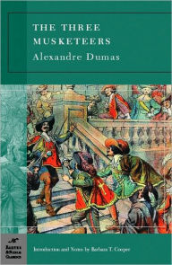 The Three Musketeersby Alexandre Dumas
Ratings
You can’t really discuss adventure stories without bringing Dumas into the conversation. His novels are still the gold standard when it comes to stories centered on a sense of esprit de corps and the origin of the idea people with a particular set of skills should not be mistreated.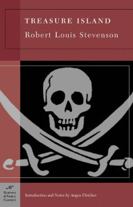 Treasure Islandby Robert Stevenson
Ratings
Every kid (and everyone who has ever been a kid) should read Treasure Island at least once, just as every kid should spend at least one summer pretending to be a pirate hunting for secret treasure. At some point in every life, people dream of adventure finding them and forcing them into the world—just like the Old Buccaneer comes to Jim Hawkins, setting the boy on a path to (what else?) adventure.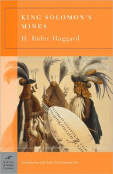 King Solomon's Minesby H. Rider Haggard
Ratings
Written in a time when Africa seemed infinite and largely unexplored, at least from a Western point of view, Haggard’s classic adventure novel created a template still followed today—the Indiana Jones films owe a huge debt to Haggard, for example. Adventurer Allan Quatermain agrees to search for a man who went missing while seeking the titular mines in exchange for a share of any treasure found, and encounters hidden kingdoms and terrible dangers—the latter being more or less a requirement of the genre.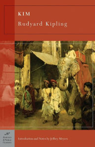 Kimby Rudyard Kipling
Ratings
Kipling’s story of an orphaned Irish boy who grows up more or less as a native in British India has influenced generations of storytellers. Kim learns the “Great Game” of espionage and secret politics in the heat of India before being identified as English and sent back to England where he’s schooled and trained in spycraft. No one combines religious and philosophical concepts with a tense spy story like Kipling did.The Call Of The Wild
by Jack Landon
Ratings
Buck is a dog, kidnapped from his home and forced into slavery as a sled dog. As Buck slowly loses his “civilization” (that is, his domestication) and becomes wild and feral, he has a series of adventures that are heartbreaking in their constant cruelty, but his final fate as a member of a wild pack of wolves isn’t a tragedy. London’s powerful story is iconic for a reason, of course, and is required reading for anyone wondering who they would be if stripped of the modern conveniences.Tarzen Of The Apesby EdgarBurroughs
Ratings
Burroughs’ adventure in the jungle remains one of the most famous and most-adapted (and imitated) stories ever written. Who hasn’t imagined what it might be like to step outside of civilization and become as one with nature as possible? Tarzan, orphaned in the jungle of Africa and literally raised by Apes, rises to become king of the beasts while learning about his English heritage—a story brimming with blood, violence, and the thrilling idea that a hidden world awaits.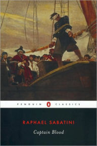 Captain Bloodby Rafael Sabatini
Ratings
Based very closely on actual historic events, this story of a physician sentenced to slavery in the Caribbean of the 17th century only to escape and become one of the most successful pirates of the time is a classic celebration of man’s ability to make his own fate, no matter the obstacles. While Sabatini certainly took the story further than reality, much of the bones of the novel actually happened to various people, giving it an air of verisimilitude.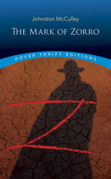 The Mark Of Zorroby Johnston McCulley
Ratings
McCulley’s Mexican nobleman who dons a mask and a dashing persona to fight injustice and tyranny has had a profound influence on fiction since his first appearance in the early 20th century. As Don Diego de la Vega, the character feigns disinterest in swordplay, romance, or adventure, but this is all in service of protecting his secret identity.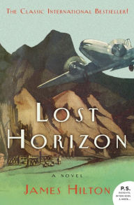 Lost Horizonby James Hilton
Ratings
The origin of the term “Shangri-La,” this story of a hidden monastery in the mountains of Tibet where the aging process slows and a lifetime of study and contemplation offers hope to a world ruined by war is still a gripping tale nearly a century later. That there was a time when it wasn’t that hard to imagine secret, hidden kingdoms in the world is thrilling enough, but the story is compelling, detailing the terrors of warfare at a time when it seemed the world might just end at any moment.